<!doctype html>
<html lang="ro">
<head>
<meta charset="utf-8">
<meta name="viewport" content="width=device-width, initial-scale=1, viewport-fit=cover">
<title>Misiunea Pas cu Pas</title>
<meta name="description" content="Lecție-joc pentru clasa a V-a: ce este un algoritm, proprietățile lui, datele de intrare, de ieșire și de manevră, constante și variabile, expresii, structura secvențială și structura alternativă, în limbaj natural.">
<link rel="preconnect" href="https://fonts.googleapis.com">
<link rel="preconnect" href="https://fonts.gstatic.com" crossorigin>
<link rel="stylesheet" href="https://fonts.googleapis.com/css2?family=Baloo+2:wght@600;800&family=Atkinson+Hyperlegible:ital,wght@0,400;0,700;1,400&family=Anonymous+Pro:wght@400;700&display=swap&subset=latin-ext">
<link rel="stylesheet" href="../_motor/motor.css">
<style>
:root{
  --desk:#EEF0F7; --paper:#FFFFFF; --paper2:#F1F3FB; --line:#D3D8EA;
  --ink:#1B2036; --ink2:#565E7D; --accent:#3A48B8; --accentInk:#FFFFFF; --sel:#DDE1F7;
  --mark:#FFE27A; --markInk:#1B2036; --ok:#23784A; --okbg:#E0F2E7; --bad:#B8362E; --badbg:#FBE5E3;
  --fd:"Baloo 2","Segoe UI",system-ui,sans-serif; --fb:"Atkinson Hyperlegible","Segoe UI",system-ui,sans-serif; --fm:"Anonymous Pro",Consolas,monospace;
  --pas:#FFFFFF; --pasInk:#3A48B8;
}
@media (prefers-color-scheme:dark){:root:not([data-theme="light"]){
  --desk:#10121C; --paper:#181B2A; --paper2:#212538; --line:#343A55;
  --ink:#E6E8F4; --ink2:#A4AAC8; --accent:#8E9BFF; --accentInk:#10121C; --sel:#2B3160;
  --mark:#EBC95C; --markInk:#1B2036; --ok:#6CCB8F; --okbg:#18301F; --bad:#FF8479; --badbg:#3B1E1E;
  --pas:#212538; --pasInk:#8E9BFF;
}}
:root[data-theme="dark"]{
  --desk:#10121C; --paper:#181B2A; --paper2:#212538; --line:#343A55;
  --ink:#E6E8F4; --ink2:#A4AAC8; --accent:#8E9BFF; --accentInk:#10121C; --sel:#2B3160;
  --mark:#EBC95C; --markInk:#1B2036; --ok:#6CCB8F; --okbg:#18301F; --bad:#FF8479; --badbg:#3B1E1E;
  --pas:#212538; --pasInk:#8E9BFF;
}
/* tema jocului: o fâșie de pași numerotați, de la ÎNCEPUT la SFÂRȘIT, cu un romb de decizie */
.banda{display:flex;align-items:center;gap:6px;padding:7px 12px;white-space:nowrap;overflow:hidden;font-family:var(--fm);font-size:.72rem;font-weight:700}
.banda .cap{flex:none;padding:2px 10px;border-radius:999px;background:var(--accent);color:var(--accentInk)}
.banda .pas{flex:none;padding:2px 8px;border:1.5px solid var(--accent);border-radius:4px;background:var(--pas);color:var(--pasInk)}
.banda .sg{flex:none;color:var(--accent)}
.banda .romb{flex:none;width:14px;height:14px;border:2px solid var(--accent);transform:rotate(45deg);margin:0 4px}
h1 .sag{color:var(--accent)}
.alg{display:block;white-space:pre-wrap;line-height:1.55;padding:.45em .7em;margin:.5em 0}
</style>
</head>
<body>
<script src="../_motor/motor.js"></script>
<script>
// algoritm pe mai multe rânduri; stilul e pus direct pe element, ca să arate la fel și în recapitularea clasei
const A=s=>`<code class="alg" style="display:block;white-space:pre-wrap;line-height:1.55;padding:.45em .7em;margin:.5em 0">${s}</code>`;
const LEVELS=[
{t:'Ce este un algoritm',lectii:[24],continuturi:['Noțiunea de algoritm'],text:`
<p>Un <mark>algoritm</mark> este un șir de <mark>pași clari</mark>, scriși în ordine, care rezolvă o problemă.</p>
<p>Folosești algoritmi în fiecare zi: rețeta unei prăjituri, drumul de acasă la școală, instrucțiunile de montare a unei jucării.</p>
<p>Un algoritm pornește de la ce știi la început (<mark>datele</mark>) și ajunge la un <mark>rezultat</mark>.</p>
<p>Calculatorul nu ghicește ce ai vrut să spui. Face <strong>exact</strong> ce scrie în pași. De aceea pașii pentru calculator trebuie să fie foarte preciși.</p>
<p>Pozele de mai jos sunt făcute în <mark>Scratch</mark>, un mediu grafic în care pașii unui algoritm sunt blocuri colorate pe care le îmbini.</p>
<figure class="captura"><a href="../algoritmi-v/img/scratch-pasi-ordine.webp" target="_blank">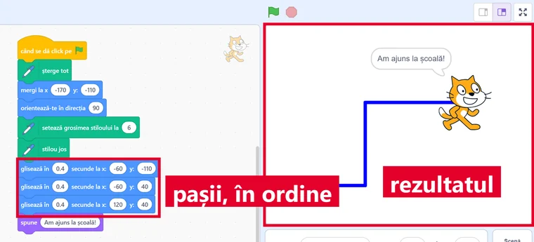</a>
<figcaption>Algoritmul „drumul spre școală” în Scratch: <b>pașii, în ordine</b>, iar pe scenă <b>rezultatul</b> — traseul desenat.</figcaption></figure>
<figure class="captura"><a href="../algoritmi-v/img/scratch-alta-ordine.webp" target="_blank">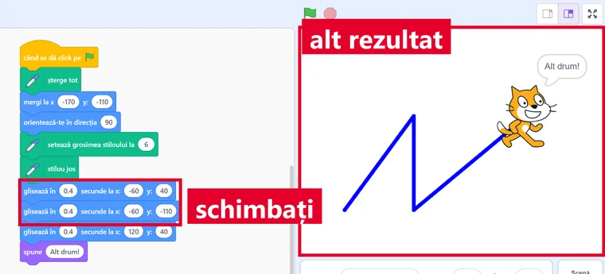</a>
<figcaption>Aceiași pași, dar doi dintre ei <b>schimbați între ei</b>: iese alt drum. Calculatorul face exact ce scrie, nu ce ai vrut tu să scrii.</figcaption></figure>`,
qs:[
 {t:'tf',q:'Algoritmii există doar în calculatoare.',ok:false,why:'Fals. O rețetă sau drumul spre școală, scris pas cu pas, sunt tot algoritmi. Calculatorul doar execută algoritmi foarte precis.'},
 {t:'classify',q:'Sortează exemplele: care au pași în ordine ce duc la un rezultat?',cats:['Este algoritm','Nu este algoritm'],items:[['Instrucțiunile de montare a unui raft',0],['Pașii adunării a două numere în coloană',0],['Traseul pas cu pas de la școală la bibliotecă',0],['Un desen cu un peisaj',1],['Lista cu numele colegilor',1]],why:'Un algoritm are pași în ordine și un scop: ajungi la un rezultat. Un desen sau o listă de nume nu spun ce să faci.'},
 {t:'order',q:'Pune în ordine pașii algoritmului: îl suni pe un prieten de pe telefonul tău.',items:['Deblochezi telefonul','Deschizi agenda','Cauți numele prietenului','Apeși butonul de apel'],why:'Fiecare pas are nevoie de cel dinainte: fără telefon deblocat nu deschizi agenda, iar fără nume găsit nu ai pe cine să suni.'},
 {t:'choice',q:'De ce pașii pentru calculator trebuie să fie foarte preciși?',o:['Calculatorul face exact ce scrie, nu ghicește ce ai vrut','Calculatorul refuză pașii scurți','Pașii preciși se execută mai încet','Calculatorul are nevoie de pași în limba engleză'],ok:0,why:'Calculatorul nu înțelege „cam așa” sau „știi tu”. Execută pașii exact cum sunt scriși, deci orice pas vag duce la un rezultat greșit.'},
 {t:'choice',q:'Într-o rețetă de clătite, ce este rezultatul?',o:['Clătitele gata făcute','Ouăle, laptele și făina','Tigaia','Pasul „amestecă”'],ok:0,why:'Ingredientele sunt datele de la care pornești, iar pașii sunt algoritmul. Rezultatul e ce obții la final: clătitele.'}
]},
{t:'Proprietățile unui algoritm',lectii:[25],continuturi:['Proprietăți ale algoritmilor'],text:`
<p>Un algoritm bun are trei <mark>proprietăți</mark>:</p>
<ul>
<li><mark>claritatea</mark>: fiecare pas are un singur înțeles. „Pune puțină sare” nu e clar: cât înseamnă „puțină”?</li>
<li><mark>finitudinea</mark>: algoritmul se oprește după un număr de pași. „Mergi înainte și nu te opri” nu se termină niciodată.</li>
<li><mark>generalitatea</mark>: algoritmul rezolvă toate problemele de același fel, nu doar una. Unul care află aria <em>oricărui</em> dreptunghi e mai bun decât unul care o află doar pentru dreptunghiul de 3 pe 5.</li>
</ul>
<figure class="captura"><a href="../algoritmi-v/img/scratch-infinit.webp" target="_blank">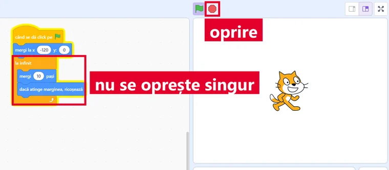</a>
<figcaption>Aici finitudinea e încălcată: blocul <b>la infinit</b> repetă pașii la nesfârșit. Se oprește doar dacă apeși tu <b>semnul roșu</b>.</figcaption></figure>
<figure class="captura"><a href="../algoritmi-v/img/scratch-finit.webp" target="_blank">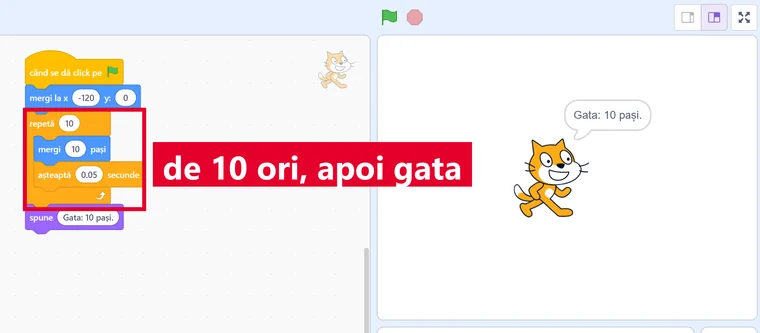</a>
<figcaption>Același lucru, dar cu <b>repetă (10)</b>: algoritmul se oprește singur după 10 pași, deci are finitudine.</figcaption></figure>`,
qs:[
 {t:'choice',q:'Pasul „Fierbe apa puțin” încalcă o proprietate. Care?',o:['Claritatea','Finitudinea','Generalitatea'],ok:0,why:'„Puțin” poate însemna un minut pentru cineva și zece minute pentru altcineva. Pasul are mai multe înțelesuri, deci nu e clar.'},
 {t:'match',q:'Leagă fiecare proprietate de ce cere ea.',pairs:[['Claritatea','fiecare pas are un singur înțeles'],['Finitudinea','algoritmul se oprește după un număr de pași'],['Generalitatea','rezolvă toate problemele de același fel']],why:'Cele trei proprietăți răspund la trei întrebări: se înțelege? se termină? merge și pentru alte date?'},
 {t:'classify',q:'Ce proprietate încalcă fiecare algoritm?',cats:['Claritatea','Finitudinea','Generalitatea'],items:[['Adaugă „câteva” linguri de făină',0],['Mergi „cam pe acolo” până la școală',0],['Numără din 1 în 1 și nu te opri niciodată',1],['Apasă butonul din nou și din nou, fără să spui când te oprești',1],['Calculează doar suma numerelor 4 și 7',2],['Află perimetrul doar pentru pătratul cu latura 5',2]],why:'Cuvintele vagi strică claritatea. Lipsa unui moment de oprire strică finitudinea. Un algoritm legat de un singur caz nu are generalitate.'},
 {t:'tf',q:'Un algoritm care primește lungimea și lățimea și află aria oricărui dreptunghi are proprietatea de generalitate.',ok:true,why:'Adevărat. Merge pentru orice dreptunghi: schimbi datele și obții aria noului dreptunghi, fără să schimbi pașii.'},
 {t:'hunt',q:'Algoritmul Anei pentru ceai are 2 pași care încalcă proprietățile. Apasă pe ei.',src:'1. Pune apă în fierbător. 2. Pornește fierbătorul și așteaptă să fiarbă apa. 3. Pune în cană [[o cantitate potrivită de zahăr|„potrivită” nu e clar: câte lingurițe?]]. 4. Toarnă apa fierbinte în cană. 5. [[Amestecă fără oprire|algoritmul nu se mai termină: trebuie spus când te oprești]].',indiciu:'Caută un pas vag și un pas care nu se termină.',why:'„Potrivită” lasă loc de ghicit, deci strică claritatea. „Fără oprire” strică finitudinea. Corect ar fi „o linguriță de zahăr” și „amestecă de 5 ori”.'}
]},
{t:'Datele și variabilele',lectii:[26],continuturi:['Clasificarea datelor cu care lucrează algoritmii în funcţie de rolul acestora (de intrare, de ieșire, de manevră)','Constante și variabile'],text:`
<p>Un algoritm lucrează cu <mark>date</mark>. După rolul lor, ele sunt:</p>
<ul>
<li><mark>de intrare</mark>: le primește la început (le <em>citește</em>);</li>
<li><mark>de ieșire</mark>: rezultatele pe care le dă la final (le <em>afișează</em>);</li>
<li><mark>de manevră</mark>: valori ajutătoare, calculate pe drum.</li>
</ul>
<p>O <mark>variabilă</mark> are un nume și o valoare care se poate schimba, ca scorul dintr-un joc. O <mark>constantă</mark> are o valoare care nu se schimbă, de exemplu 60 de minute într-o oră.</p>
<p>Scriem <code>scor ← 10</code> și citim „scor primește valoarea 10”.</p>
<figure class="captura"><a href="../algoritmi-v/img/scratch-variabile.webp" target="_blank">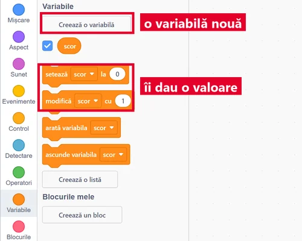</a>
<figcaption>În Scratch, variabila se face din categoria <b>Variabile</b>: apeși <b>Creează o variabilă</b> și îi dai un nume. Blocul <b>setează scor la 0</b> e chiar <code>scor ← 0</code>.</figcaption></figure>
<figure class="captura"><a href="../algoritmi-v/img/scratch-roluri-date.webp" target="_blank">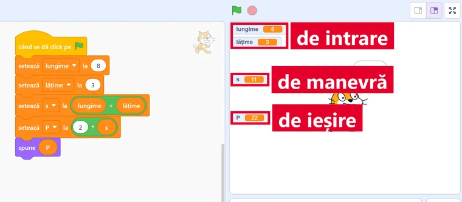</a>
<figcaption>Perimetrul dreptunghiului, rulat: <b>lungime</b> și <b>lățime</b> sunt datele <b>de intrare</b>, <code>s</code> e o dată <b>de manevră</b>, iar <code>P</code> e data <b>de ieșire</b>.</figcaption></figure>`,
qs:[
 {t:'choice',q:'Algoritmul citește numărul de caiete și prețul unui caiet, apoi afișează cât ai de plătit. Care este data de ieșire?',o:['Suma de plătit','Prețul unui caiet','Numărul de caiete'],ok:0,why:'Numărul de caiete și prețul sunt date de intrare: le primește la început. Suma de plătit e rezultatul pe care îl afișează.'},
 {t:'classify',q:'Perimetrul dreptunghiului: citești L și l, calculezi s ← L + l, apoi P ← 2 * s și afișezi P. Ce rol are fiecare dată?',cats:['De intrare','De ieșire','De manevră'],items:[['Lungimea L',0],['Lățimea l',0],['Suma s, calculată pe drum',2],['Perimetrul P, afișat la final',1]],why:'L și l se citesc la început. P se afișează. s e o valoare ajutătoare: o folosești ca să ajungi la P, dar nu o primești și nu o afișezi.'},
 {t:'classify',q:'Constantă sau variabilă?',cats:['Constantă','Variabilă'],items:[['Numărul de minute dintr-o oră (60)',0],['Numărul de zile dintr-o săptămână (7)',0],['Scorul dintr-un joc',1],['Temperatura de afară',1],['Numărul de mere rămase în coș',1]],why:'O oră are mereu 60 de minute și o săptămână 7 zile. Scorul, temperatura și merele din coș se schimbă.'},
 {t:'tf',q:'O variabilă poate avea valori diferite în momente diferite ale algoritmului.',ok:true,why:'Adevărat. De aceea se numește variabilă, de la „a varia”, adică a se schimba. Numele rămâne același, valoarea se poate schimba.'},
 {t:'choice',q:`Urmărește pașii. Ce valoare are scor la final?${A('scor ← 10\nscor ← scor + 5')}`,o:['15','10','5','105'],ok:0,why:'La primul pas scor devine 10. La al doilea, scor primește valoarea lui veche plus 5, adică 10 + 5 = 15. Nu se lipesc cifrele, ca în 105.'}
]},
{t:'Expresii și operatori',lectii:[27],continuturi:['Expresii (operatori aritmetici, relaționali, logici; evaluarea expresiilor)'],text:`
<p>O <mark>expresie</mark> leagă numere și variabile prin <mark>operatori</mark>. A evalua expresia înseamnă a-i afla valoarea.</p>
<ul>
<li><strong>aritmetici</strong>: <code>+ - * /</code> și <code>%</code>, <mark>restul împărțirii</mark> (<code>17 % 5</code> = 2);</li>
<li><strong>relaționali</strong>: <code>&lt; ≤ &gt; ≥ = ≠</code>. Rezultatul e <em>adevărat</em> sau <em>fals</em>;</li>
<li><strong>logici</strong>: <mark>ȘI</mark> e adevărat doar dacă ambele părți sunt adevărate; <mark>SAU</mark>, dacă cel puțin una e adevărată; <mark>NU</mark> schimbă adevărat în fals și invers.</li>
</ul>
<p>Ordinea e ca la matematică: întâi parantezele, apoi <code>* / %</code>, apoi <code>+ -</code>. Comparațiile vin după calcule, iar operatorii logici la urmă.</p>
<figure class="captura"><a href="../algoritmi-v/img/scratch-operatori.webp" target="_blank">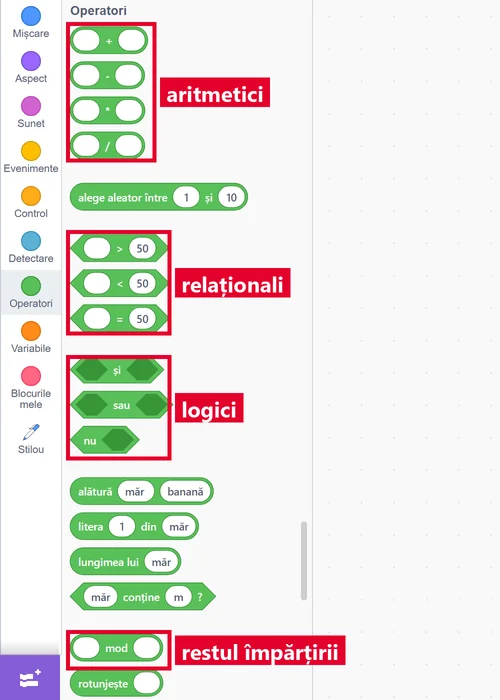</a>
<figcaption>Categoria <b>Operatori</b> din Scratch: sus cei <b>aritmetici</b>, apoi cei <b>relaționali</b>, apoi cei <b>logici</b>. Blocul <b>mod</b> dă restul împărțirii, adică <code>%</code>.</figcaption></figure>
<figure class="captura"><a href="../algoritmi-v/img/scratch-expresii.webp" target="_blank">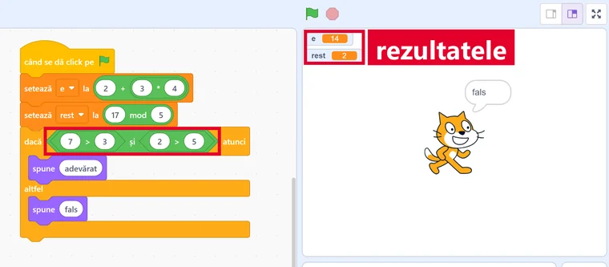</a>
<figcaption>Expresiile evaluate chiar în Scratch: <code>2 + 3 * 4</code> dă <b>14</b> (înmulțirea prima), iar <code>17 mod 5</code> dă <b>2</b>. Blocul încadrat, <code>7 &gt; 3 și 2 &gt; 5</code>, e <em>fals</em>: la ȘI trebuie ambele adevărate.</figcaption></figure>`,
qs:[
 {t:'choice',q:'Cât este 2 + 3 * 4?',o:['14','20','9','24'],ok:0,why:'Înmulțirea se face înaintea adunării: 3 * 4 = 12, apoi 2 + 12 = 14. Rezultatul 20 ar fi corect doar pentru (2 + 3) * 4.'},
 {t:'choice',q:'Cât este 17 % 5?',o:['2','3','3,4','85'],ok:0,why:'17 împărțit la 5 dă câtul 3 și restul 2, pentru că 5 * 3 = 15 și 17 - 15 = 2. Operatorul % dă restul, nu câtul.'},
 {t:'classify',q:'Ce fel de operator este fiecare?',cats:['Aritmetic','Relațional','Logic'],items:[['+',0],['%',0],['≥',1],['≠',1],['ȘI',2],['SAU',2]],why:'Operatorii aritmetici calculează numere. Cei relaționali compară și dau adevărat sau fals. Cei logici leagă mai multe condiții.'},
 {t:'match',q:'Leagă fiecare expresie de valoarea ei.',pairs:[['(2 + 3) * 4','20'],['10 - 4 / 2','8'],['9 % 2','1'],['6 ≠ 6','fals']],why:'Parantezele se fac primele. Împărțirea vine înaintea scăderii: 4 / 2 = 2, apoi 10 - 2 = 8. 9 împărțit la 2 are restul 1. 6 este egal cu 6, deci „6 ≠ 6” e fals.'},
 {t:'tf',q:'Expresia „7 &gt; 3 ȘI 2 &gt; 5” este adevărată.',ok:false,why:'Fals. 7 &gt; 3 e adevărat, dar 2 &gt; 5 e fals. Cu ȘI, expresia e adevărată doar dacă ambele părți sunt adevărate.'},
 {t:'choice',q:'Variabila nota are valoarea 8. Care expresie este adevărată?',o:['nota ≥ 5 SAU nota = 10','nota < 5','nota = 10 ȘI nota ≥ 5','NU (nota ≥ 5)'],ok:0,why:'La SAU ajunge ca o parte să fie adevărată, iar 8 ≥ 5 e adevărat. La ȘI, partea „nota = 10” e falsă. NU schimbă „nota ≥ 5”, care e adevărat, în fals.'}
]},
{t:'Structura secvențială',lectii:[28],continuturi:['Structura secvenţială (liniară)'],text:`
<p>În <mark>structura secvențială</mark> (liniară), pașii se execută <mark>unul după altul</mark>, în ordinea scrisă. Fiecare pas se execută o singură dată. Niciunul nu se sare.</p>
<p>Scriem algoritmul în <mark>limbaj natural</mark>, adică în cuvinte, cu pași numerotați:</p>
${A('Început\n1. Citește lungimea și lățimea.\n2. Calculează aria ← lungime * lățime.\n3. Afișează aria.\nSfârșit')}
<p>Ca să verifici un algoritm, îl <mark>urmărești pas cu pas</mark>: scrii valoarea fiecărei variabile după fiecare pas.</p>
<figure class="captura"><a href="../algoritmi-v/img/scratch-secventa.webp" target="_blank">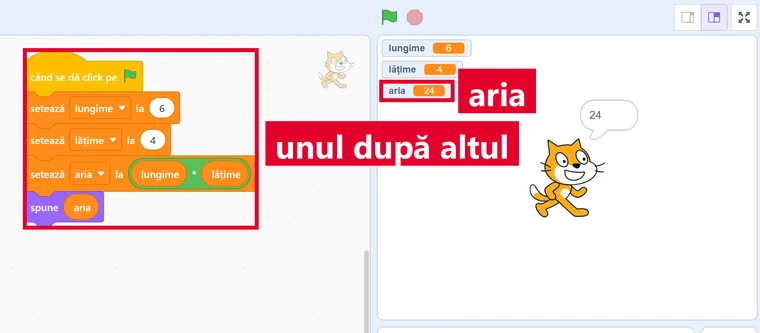</a>
<figcaption>Aceiași pași, în Scratch: blocurile sunt lipite <b>unul după altul</b> și se execută în ordine. Pentru 6 și 4, <b>aria</b> iese 24.</figcaption></figure>
<figure class="captura"><a href="../algoritmi-v/img/scratch-urmarire.webp" target="_blank">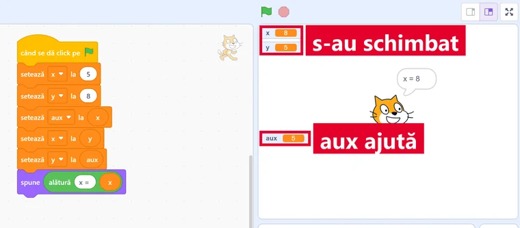</a>
<figcaption>Urmărirea pas cu pas se vede pe scenă: <code>aux</code> păstrează valoarea veche a lui <code>x</code>, iar la final <b>x și y s-au schimbat</b> între ele.</figcaption></figure>`,
qs:[
 {t:'tf',q:'În structura secvențială, un pas poate fi sărit dacă ți se pare inutil.',ok:false,why:'Fals. În secvență fiecare pas se execută o dată, în ordinea scrisă. Dacă un pas e inutil, îl scoți din algoritm, nu îl sari.'},
 {t:'order',q:'Pune în ordine algoritmul care află aria unui dreptunghi.',items:['Început','Citește lungimea și lățimea','Calculează aria ← lungime * lățime','Afișează aria','Sfârșit'],why:'Nu poți calcula fără date și nu poți afișa un rezultat pe care încă nu l-ai calculat. Început și Sfârșit închid algoritmul.'},
 {t:'choice',q:`Urmărește pas cu pas. Ce se afișează?${A('a ← 4\nb ← a * 3\na ← b - 2\nAfișează a')}`,o:['10','4','12','2'],ok:0,why:'a = 4. Apoi b = 4 * 3 = 12. Apoi a primește 12 - 2 = 10, iar valoarea veche, 4, se pierde. Se afișează 10.'},
 {t:'choice',q:`Urmărește pas cu pas. Ce valori au x și y la final?${A('x ← 5\ny ← 8\naux ← x\nx ← y\ny ← aux')}`,o:['x = 8, y = 5','x = 5, y = 8','x = 8, y = 8','x = 5, y = 5'],ok:0,why:'aux păstrează 5. x primește 8. y primește ce era în aux, adică 5. Valorile s-au schimbat între ele, iar aux e o dată de manevră.'},
 {t:'hunt',q:'Algoritmul lui Mihai pentru media a două note are 2 greșeli. Apasă pe ele.',src:'Început. 1. Citește nota1 și nota2. 2. [[Afișează media.|media nu e încă calculată: afișarea vine după calcul]] 3. Calculează media ← [[nota1 + nota2 / 2|fără paranteze se împarte doar nota2 la 2; corect: (nota1 + nota2) / 2]]. Sfârșit.',indiciu:'Uită-te la ordinea pașilor și la paranteze.',why:'Un rezultat se afișează doar după ce a fost calculat. Împărțirea se face înaintea adunării, deci suma trebuie pusă în paranteze.'}
]},
{t:'Structura alternativă',lectii:[29],continuturi:['Structura alternativă (decizională)Medii grafice interactive - elemente de interfață specifice mediului grafic interactiv'],text:`
<p>Uneori algoritmul trebuie să <mark>aleagă</mark>. Pentru asta folosim <mark>structura alternativă</mark> (decizia):</p>
${A('Dacă nota ≥ 5 atunci\n    afișează „Promovat”\naltfel\n    afișează „Nepromovat”')}
<p>Întâi se verifică <mark>condiția</mark>. Dacă e adevărată, se execută ramura <strong>atunci</strong>. Dacă e falsă, se execută ramura <strong>altfel</strong>.</p>
<p>Se execută <mark>o singură ramură</mark>, niciodată amândouă. Ramura <em>altfel</em> poate lipsi: atunci, când condiția e falsă, nu se face nimic și algoritmul merge mai departe.</p>
<figure class="captura"><a href="../algoritmi-v/img/scratch-impar.webp" target="_blank">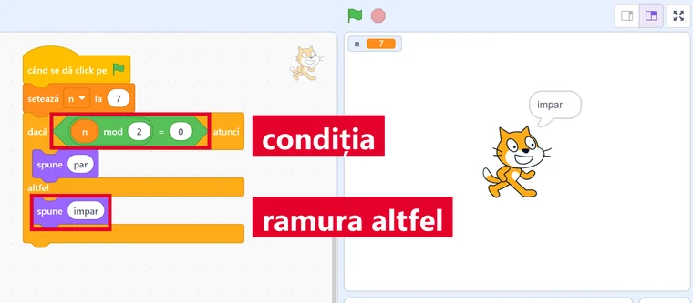</a>
<figcaption>Același algoritm în Scratch, pentru <b>n = 7</b>: <b>condiția</b> <code>n mod 2 = 0</code> e falsă, deci se execută <b>ramura altfel</b>. Pisica spune „impar”.</figcaption></figure>
<figure class="captura"><a href="../algoritmi-v/img/scratch-par.webp" target="_blank">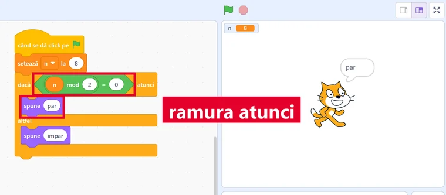</a>
<figcaption>Aceleași blocuri, pentru <b>n = 8</b>: condiția e adevărată, deci se execută <b>ramura atunci</b>. Se schimbă doar datele, nu și pașii.</figcaption></figure>`,
qs:[
 {t:'tf',q:'Într-o structură alternativă se execută ambele ramuri, una după alta.',ok:false,why:'Fals. Condiția alege: dacă e adevărată merge pe „atunci”, dacă e falsă pe „altfel”. Niciodată pe amândouă.'},
 {t:'choice',q:`Ce se afișează pentru n = 7?${A('Citește n\nDacă n % 2 = 0 atunci\n    afișează „par”\naltfel\n    afișează „impar”')}`,o:['impar','par','7','nimic'],ok:0,why:'7 % 2 = 1, deci condiția „1 = 0” e falsă și se execută ramura altfel. Un număr cu restul 0 la împărțirea cu 2 e par.'},
 {t:'choice',q:`Ce se afișează pentru a = 4 și b = 9?${A('Citește a, b\nDacă a &gt; b atunci\n    afișează a\naltfel\n    afișează b')}`,o:['9','4','13','4 și 9'],ok:0,why:'4 &gt; 9 e fals, deci se afișează b, adică 9. Algoritmul afișează mereu numărul mai mare dintre cele două.'},
 {t:'classify',q:'Algoritmul: „Dacă temperatura &lt; 10 atunci afișează «Ia geaca» altfel afișează «Nu e nevoie de geacă»”. Ce afișează pentru fiecare temperatură?',cats:['Ia geaca','Nu e nevoie de geacă'],items:[['3 grade',0],['9 grade',0],['-2 grade',0],['10 grade',1],['18 grade',1]],why:'Condiția e „mai mic decât 10”. La 10 grade, „10 &lt; 10” e fals, deci se merge pe ramura altfel. Și -2 e mai mic decât 10.'},
 {t:'choice',q:'Copiii sub 14 ani primesc bilet redus. Ce condiție scrii?',o:['vârsta < 14','vârsta > 14','vârsta ≤ 14','vârsta = 14'],ok:0,why:'„Sub 14 ani” înseamnă mai puțin de 14, fără 14. Cu „≤ 14” ar primi reducere și copiii care au împlinit 14 ani.'}
]},
{t:'Casa de bilete de la grădina zoologică',final:true,lectii:[26,27,28,29],continuturi:['Clasificarea datelor cu care lucrează algoritmii în funcţie de rolul acestora (de intrare, de ieșire, de manevră)','Constante și variabile','Expresii (operatori aritmetici, relaționali, logici; evaluarea expresiilor)','Structura secvenţială (liniară)','Structura alternativă (decizională)Medii grafice interactive - elemente de interfață specifice mediului grafic interactiv'],text:`
<p><strong>Misiunea finală.</strong> Casiera de la grădina zoologică vrea un algoritm care să calculeze cât plătește o familie.</p>
${A('Început\n1. Citește vârsta.\n2. Dacă vârsta &lt; 14 atunci preț ← 10\n   altfel preț ← 25\n3. Citește numărul de bilete n.\n4. Calculează total ← preț * n.\n5. Afișează total.\nSfârșit')}
<p>Prețurile 10 și 25 de lei sunt fixe. Algoritmul are și pași în secvență, și o decizie.</p>
<p>Urmărește-l pas cu pas, ca un calculator, și găsește greșelile colegilor.</p>
<figure class="captura"><a href="../algoritmi-v/img/scratch-bilete-12.webp" target="_blank">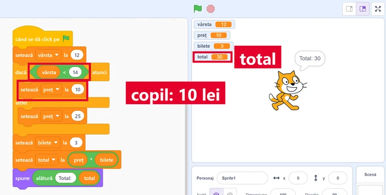</a>
<figcaption>Algoritmul casierei, rulat pentru <b>vârsta 12</b> și 3 bilete: condiția <code>vârsta &lt; 14</code> e adevărată, deci prețul e 10, iar <b>totalul</b> iese 30.</figcaption></figure>
<figure class="captura"><a href="../algoritmi-v/img/scratch-bilete-14.webp" target="_blank">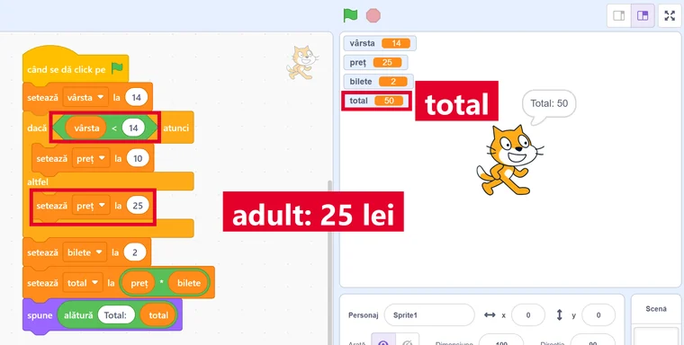</a>
<figcaption>Aceiași pași, pentru <b>vârsta 14</b> și 2 bilete: condiția e falsă, deci se merge pe ramura <em>altfel</em>, prețul e 25, iar totalul 50.</figcaption></figure>`,
qs:[
 {t:'classify',q:'Ce rol are fiecare dată din algoritmul casierei?',cats:['De intrare','De ieșire','De manevră','Constantă'],items:[['vârsta',0],['numărul de bilete n',0],['total',1],['preț, stabilit în pasul 2',2],['10 și 25 (prețurile fixe)',3]],why:'Vârsta și n se citesc. Totalul se afișează. Prețul e o valoare ajutătoare, aleasă de decizie și folosită la calcul. 10 și 25 nu se schimbă.'},
 {t:'choice',q:'Ce se afișează pentru vârsta 12 și n = 3?',o:['30','75','36','10'],ok:0,why:'12 &lt; 14 e adevărat, deci preț = 10. Total = 10 * 3 = 30.'},
 {t:'choice',q:'Ce se afișează pentru vârsta 14 și n = 2?',o:['50','20','28','25'],ok:0,why:'14 &lt; 14 e fals, deci preț = 25. Total = 25 * 2 = 50. La 14 ani nu se mai primește bilet redus.'},
 {t:'tf',q:'Algoritmul are proprietatea de generalitate: merge pentru orice vârstă și orice număr de bilete.',ok:true,why:'Adevărat. Pașii nu sunt legați de o anumită familie: schimbi vârsta sau numărul de bilete și obții alt total, fără să schimbi algoritmul.'},
 {t:'hunt',q:'Algoritmul scris de Radu are 2 greșeli. Apasă pe ele.',src:'1. Citește vârsta. 2. Dacă vârsta [[> 14|copiii sub 14 ani au vârsta mai mică: condiția este vârsta < 14]] atunci preț ← 10 altfel preț ← 25. 3. Citește n. 4. Calculează total ← preț [[+ n|totalul este prețul înmulțit cu numărul de bilete: preț * n]]. 5. Afișează total.',indiciu:'Verifică semnul comparației și operația din calcul.',why:'Cu „&gt; 14”, copiii ar plăti mai mult decât adulții. Cu „+”, trei bilete de 10 lei ar costa 13 lei în loc de 30.'}
]}
];

JocMotor.porneste({
  cheie:'joc_algoritmi_v',
  titlu:'Misiunea Pas cu Pas',
  marca:'Misiunea <b>Pas cu Pas</b>',
  h1:'Misiunea Pas cu Pas<span class="sag"> →</span>',
  clasa:'a V-a',
  unitate:'V-U5',
  unitateTitlu:'Algoritmi. Gândesc pas cu pas',
  competente:['CS.2.1','CS.2.2','CS.2.3'],
  lectii:'24–29',
  intro:'Șapte niveluri despre algoritmi: ce sunt, ce proprietăți au, cu ce date lucrează, cum calculezi expresii, cum urmărești pașii unul după altul și cum alege un algoritm. La fiecare nivel citești o pagină scurtă și răspunzi la întrebări. La final verifici algoritmul casei de bilete și îți iei diploma.',
  banda:'<span class="cap">Început</span><span class="sg">→</span><span class="pas">1. Citește</span><span class="sg">→</span><span class="pas">2. Calculează</span><span class="sg">→</span><span class="romb"></span><span class="sg">→</span><span class="pas">3. Afișează</span><span class="sg">→</span><span class="cap">Sfârșit</span>',
  nivele:LEVELS,
  diploma:{
    titlu:'Gânditor pas cu pas',
    rezumat:'noțiunea de algoritm, claritatea, finitudinea și generalitatea, datele de intrare, de ieșire și de manevră, constantele și variabilele, expresiile, structura secvențială și structura alternativă',
    aplicatie:'caietul de informatică',
    provocare:[
      'Scrie în limbaj natural, cu pași numerotați, un algoritm care citește două note și afișează media lor.',
      'Adaugă o decizie: dacă media este cel puțin 5, afișează „Promovat”, altfel „Nepromovat”.',
      'Scrie lângă algoritm care sunt datele de intrare, de ieșire și de manevră.',
      'Urmărește-l pas cu pas pentru notele 4 și 7, apoi pentru 9 și 10, și scrie ce afișează de fiecare dată.',
      'Dă-i algoritmul unui coleg și verificați împreună dacă e clar, dacă se termină și dacă merge pentru orice note.'
    ]
  }
});
</script>
</body>
</html>
